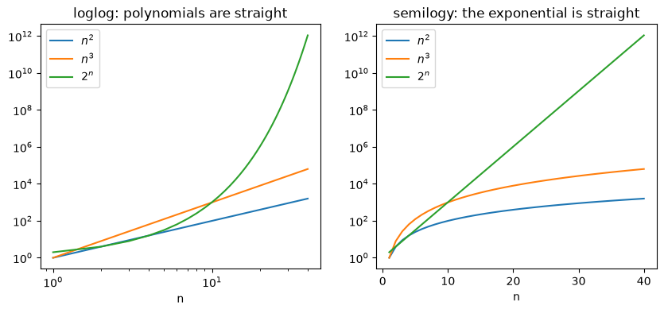
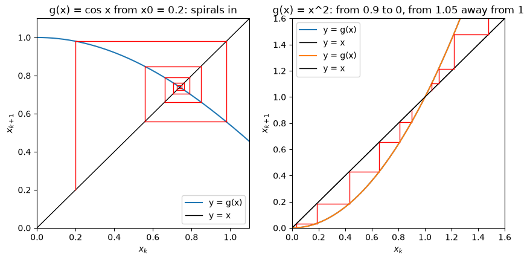
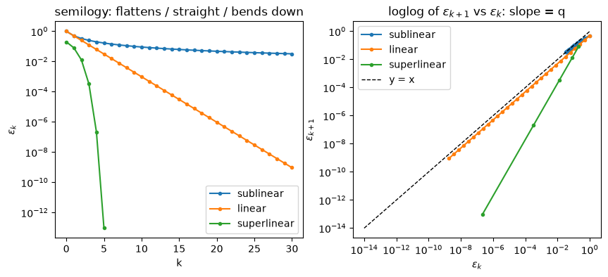

Limits and Convergence of Algorithms#
import numpy as np
import matplotlib.pyplot as plt
1. Review: polynomial vs. exponential growth#
polynomial \(t \approx c\,n^a\) |
exponential \(t \approx c\,b^{\,n}\) (\(b > 1\)) |
|
|---|---|---|
typical code |
\(a\) nested loops |
try every subset (\(b = 2\)) |
take logs |
\(\log t \approx a \log n + \log c\) |
\(\log t \approx n \log b + \log c\) |
straight line on |
|
|
slope |
\(a\) (the exponent) |
\(\log b\), so \(b = e^{\text{slope}}\) |
Run the cell and look for the straight lines.
n = np.arange(1, 41)
fig, axes = plt.subplots(1, 2, figsize=(10, 4))
for ax in axes:
ax.plot(n, n**2, label="$n^2$")
ax.plot(n, n**3, label="$n^3$")
ax.plot(n, 2.0**n, label="$2^n$")
ax.set_xlabel("n")
ax.legend()
axes[0].set_xscale("log"); axes[0].set_yscale("log"); axes[0].set_title("loglog: polynomials are straight")
axes[1].set_yscale("log"); axes[1].set_title("semilogy: the exponential is straight")
plt.show()

To estimate the parameter, fit a line with np.polyfit:
a = np.polyfit(np.log(ns), np.log(ts), 1)[0] # polynomial model: slope = a
b = np.exp(np.polyfit(ns, np.log(ts), 1)[0]) # exponential model: b = e^slope
polyfit always returns a number, even for the wrong model. The split test: fit the first half and the second half of the data separately. With the right model both halves agree; with the wrong model the value drifts.
2. Limits of sequences#
A sequence is a list of numbers \(x_0, x_1, x_2, \ldots\) indexed by \(k\).
Definition. \(x_k \to x_\ast\) if for every tolerance \(\tau > 0\) there is a \(K\) with \(|x_k - x_\ast| < \tau\) for all \(k \ge K\).
In words: choose any tolerance \(\tau\), however small. After some index \(K\), every term stays within \(\tau\) of \(x_\ast\).
Example: \(x_k = 1/k \to 0\). For \(\tau = 0.01\) we can take \(K = 101\). The cell below finds the first \(K\) for a few tolerances: a smaller \(\tau\) just needs a larger \(K\).
k = np.arange(1, 10**6 + 1)
x = 1 / k # the sequence 1/k, limit 0
for tau in [1e-1, 1e-2, 1e-3, 1e-4]:
K = k[np.abs(x - 0) < tau][0] # first k with |x_k - 0| < tau
print(f"tau = {tau:.0e}: K = {K}")
# two more sequences that converge
x_e = (1 + 1 / k)**k # -> e
x_basel = np.cumsum(1 / k**2) # partial sums -> pi^2 / 6
print("\n(1+1/k)^k at k = 10^6:", x_e[-1], " e =", np.e)
print("sum 1/j^2 at k = 10^6:", x_basel[-1], " pi^2/6 =", np.pi**2 / 6)
tau = 1e-01: K = 11
tau = 1e-02: K = 101
tau = 1e-03: K = 1001
tau = 1e-04: K = 10001
(1+1/k)^k at k = 10^6: 2.7182804690957534 e = 2.718281828459045
sum 1/j^2 at k = 10^6: 1.64493306684877 pi^2/6 = 1.6449340668482264
3. Algorithms as sequences#
Many algorithms repeat one step, \(x_{k+1} = g(x_k)\). Recording the output after every iteration gives a sequence.
algorithm |
\(g(x)\) |
|---|---|
Newton for \(\sqrt 2\) |
\(\tfrac12(x + 2/x)\) |
\(\cos\) iteration |
\(\cos x\) |
Where can it converge? If \(x_k \to x_\ast\) and \(g\) is continuous, taking the limit of \(x_{k+1} = g(x_k)\) gives \(x_\ast = g(x_\ast)\): the limit is a fixed point of \(g\).
Which fixed point does it find? Near \(x_\ast\), one step multiplies the error by about \(g'(x_\ast)\):
\(|g'(x_\ast)| < 1\): the error shrinks, \(x_\ast\) attracts, and \(C = |g'(x_\ast)|\);
\(|g'(x_\ast)| > 1\): the error grows, \(x_\ast\) repels.
Cobweb plot. The numbers \(x_0, x_1, \ldots\) tell you whether the iteration settles; the cobweb shows where (where \(y = g(x)\) crosses \(y = x\)) and how (it spirals in, walks in, or runs away). Each iteration draws two segments:
vertical, from the line to the curve: \((x_k, x_k) \to (x_k, x_{k+1})\);
horizontal, back to the line: \((x_k, x_{k+1}) \to (x_{k+1}, x_{k+1})\).
Two helpers for the Activity: iterate (as you wrote it last time, plus a safety stop when the values blow up) and cobweb.
def iterate(g, x0, N, blowup=1e8):
'''return [x0, x1, ..., xN] with x_{k+1} = g(x_k); stops early if |x| > blowup'''
xs = [x0]
for k in range(N):
xs.append(g(xs[-1]))
if abs(xs[-1]) > blowup:
break
return xs
def cobweb(g, x0, N, xmin, xmax, ax=None):
'''cobweb plot of N steps of x_{k+1} = g(x_k), starting from x0'''
if ax is None:
fig, ax = plt.subplots()
x = np.linspace(xmin, xmax, 400)
ax.plot(x, g(x), label="y = g(x)") # the curve
ax.plot(x, x, "k", lw=1, label="y = x") # the line
xk = x0
for k in range(N):
xnew = g(xk) # x_{k+1} = g(x_k)
ax.plot([xk, xk], [xk, xnew], "r", lw=1) # vertical: line -> curve
ax.plot([xk, xnew], [xnew, xnew], "r", lw=1) # horizontal: curve -> line
xk = xnew
ax.set_xlim(xmin, xmax)
ax.set_ylim(xmin, xmax)
ax.set_xlabel("$x_k$")
ax.set_ylabel("$x_{k+1}$")
ax.legend()
return ax
Example. \(g(x) = \cos x\) has one fixed point \(x_\ast \approx 0.739\). Since \(g'(x) = -\sin x\), we get \(|g'(x_\ast)| = \sin(0.739) \approx 0.67 < 1\): it attracts, and the error shrinks by about \(0.67\) per step.
\(g(x) = x^2\) has two fixed points (\(x_\ast^2 = x_\ast\), so \(x_\ast = 0\) or \(1\)). With \(g'(x) = 2x\): \(g'(0) = 0\) attracts, \(g'(1) = 2\) repels.
fig, axes = plt.subplots(1, 2, figsize=(10, 4.5))
cobweb(np.cos, 0.2, 10, 0, 1.1, ax=axes[0])
axes[0].set_title("g(x) = cos x from x0 = 0.2: spirals in")
square = lambda x: x**2
cobweb(square, 0.9, 6, 0, 1.6, ax=axes[1])
cobweb(square, 1.05, 4, 0, 1.6, ax=axes[1])
axes[1].set_title("g(x) = x^2: from 0.9 to 0, from 1.05 away from 1")
plt.show()

4. Order of convergence#
With the error \(\epsilon_k = |x_k - x_\ast|\): how does one iteration shrink the error?
Definition. The convergence has order \(q \ge 1\) and rate constant \(C\) if \(\displaystyle\lim_{k\to\infty} \frac{\epsilon_{k+1}}{\epsilon_k^{\,q}} = C\) with \(0 < C < \infty\). For \(q = 1\): \(C < 1\) is linear, \(C = 1\) is sublinear.
name |
ratio \(\epsilon_{k+1}/\epsilon_k\) |
on |
|---|---|---|
sublinear |
not constant: creeps up to \(1\) (for \(1/k\): \(\tfrac12, \tfrac23, \tfrac34, \ldots\)) |
flattens out |
linear |
constant \(C < 1\) |
straight line, slope \(\log C\) |
superlinear |
goes to \(0\) |
bends down |
Measuring \(q\)#
Plot \(\epsilon_{k+1}\) against \(\epsilon_k\) on
loglogaxes. From \(\log \epsilon_{k+1} \approx q \log \epsilon_k + \log C\), the slope is \(q\). Sublinear points hug the line \(y = x\); linear points run parallel below it; superlinear points are steeper.Three consecutive errors: \(C\) cancels in $\(q_k = \frac{\log(\epsilon_{k+1}/\epsilon_k)}{\log(\epsilon_k/\epsilon_{k-1})}.\)$
Floating point floor: use only errors well above \(10^{-16}\), for example \(\epsilon_k > 10^{-14}\).
What if \(x_\ast\) is not known?#
Reference run: iterate much longer and use the last iterate \(x_N\) in place of \(x_\ast\). It matches the error, except close to \(N\).
Steps \(\delta_k = |x_{k+1} - x_k|\): they run parallel to the error, so they give the same \(C\) and \(q\). But parallel is not equal: for linear convergence the error is about \(\frac{C}{1-C}\,\delta_k\), which is large when \(C\) is close to \(1\).
The cell below shows the three types with model sequences.
kk = np.arange(0, 31)
e_sub = 1 / (kk + 1) # sublinear
e_lin = 0.5**kk # linear, C = 0.5
e_sup = [0.2] # superlinear: e_{k+1} = 2 e_k^2
for i in range(5):
e_sup.append(2 * e_sup[-1]**2)
e_sup = np.array(e_sup)
fig, axes = plt.subplots(1, 2, figsize=(10, 4))
for e, name in [(e_sub, "sublinear"), (e_lin, "linear"), (e_sup, "superlinear")]:
axes[0].semilogy(e, "o-", ms=3, label=name)
axes[1].loglog(e[:-1], e[1:], "o-", ms=3, label=name)
axes[1].loglog([1e-14, 1], [1e-14, 1], "k--", lw=1, label="y = x")
axes[0].set_xlabel("k"); axes[0].set_ylabel("$\\epsilon_k$"); axes[0].set_title("semilogy: flattens / straight / bends down")
axes[1].set_xlabel("$\\epsilon_k$"); axes[1].set_ylabel("$\\epsilon_{k+1}$"); axes[1].set_title("loglog of $\\epsilon_{k+1}$ vs $\\epsilon_k$: slope = q")
for ax in axes:
ax.legend()
plt.show()

Activity#
Three problems, from easier to harder. Each step says what your code should do. Write the Python yourself in the empty cell, then run the check cell: it prints your results next to the expected ones. Open a Steps or Hint box only when you are stuck.
About pass. Some empty cells contain a function with only the line pass inside. pass is a placeholder that does nothing: delete it when you write your code. If a check prints None, the function is not finished yet.
Useful Python for this activity
you want to … |
Python |
|---|---|
slope of \(\log t\) against \(\log n\) |
|
slope of \(\log t\) against \(n\) |
|
\(e^x\), \(\log x\), \(\lvert x \rvert\) |
|
a list as a NumPy array |
|
all entries except the last / the first |
|
the first / second half of an array |
|
differences of neighbours \(a_{k+1} - a_k\) |
|
keep only the entries above \(10^{-14}\) |
|
two plots side by side |
|
Problem 1: growth detective#
Goal: three algorithms were timed for \(n = 10, 12, \ldots, 40\). For each one, decide whether its time grows polynomially or exponentially, and estimate the exponent \(a\) or the base \(b\).
What you will see: the right kind of axes turns the data into a straight line, and the split test confirms the choice with numbers.
Run the cell below to load the data (do not change it).
data_rng = np.random.default_rng(seed=2026)
ns = np.arange(10, 42, 2)
noise = lambda: np.exp(0.03 * data_rng.standard_normal(len(ns))) # about 3% timing noise
t_A = 3e-7 * ns**2 * noise()
t_B = 2e-9 * 1.5**ns * noise()
t_C = 4e-10 * ns**4 * noise()
Step 1: two fitting functions#
fit_loglog(ns, ts) returns the slope of \(\log t\) against \(\log n\) (the exponent \(a\) if \(t \approx c\,n^a\)).
fit_semilogy(ns, ts) returns \(b = e^{\text{slope}}\), where the slope is that of \(\log t\) against \(n\) (the base \(b\) if \(t \approx c\,b^{\,n}\)).
Hint
Each function is one line; see the table of useful Python. For fit_semilogy, put np.exp(...) around the slope.
def fit_loglog(ns, ts):
# Write your code here, then delete the line `pass` below.
pass
def fit_semilogy(ns, ts):
# Write your code here, then delete the line `pass` below.
pass
# check: compare your results with the expected ones
print("fit_loglog(ns, 5 * ns**3) =", fit_loglog(ns, 5.0 * ns**3), " (expected: 3.0, up to rounding)")
print("fit_semilogy(ns, 7 * 2.0**ns) =", fit_semilogy(ns, 7.0 * 2.0**ns), " (expected: 2.0, up to rounding)")
fit_loglog(ns, 5 * ns**3) = None (expected: 3.0, up to rounding)
fit_semilogy(ns, 7 * 2.0**ns) = None (expected: 2.0, up to rounding)
Step 2: look before you fit#
Write code that:
makes two plots side by side;
draws
t_A,t_Bandt_Cagainstnswithlogloginaxes[0]and withsemilogyinaxes[1], with a legend.
Hint
axes[0].loglog(ns, t_A, "o-", label="A") and axes[1].semilogy(ns, t_A, "o-", label="A"); repeat for B and C, then call legend() on both.
# your code here
Question: which data sets look straight on which axes? Write down your guess for A, B and C: polynomial or exponential?
Step 3: the split test#
Why? In Step 2 you judged “straight or not” by eye. The split test does the same with numbers: if a model is right, its parameter (\(a\) or \(b\)) is the same everywhere in the data, so fitting the first half and the second half separately gives (almost) the same value. If the model is wrong, the two halves give clearly different values.
Write a function split_test(fit, ns, ts).
Inputs
fit: one of your two fitting functions from Step 1,fit_loglogorfit_semilogy. Pass it by name, without parentheses:split_test(fit_loglog, ns, t_A), notsplit_test(fit_loglog(), ns, t_A). Insidesplit_test, call it like any function:fit(some_ns, some_ts).ns,ts: the input sizes and the times (two arrays of the same length).
Returns a list of two numbers, [first, second]: fit applied to the first half of the data, and fit applied to the second half.
Example: split_test(fit_loglog, ns, 4e-10 * ns**4) gives [4.0, 4.0], since \(n^4\) has exponent \(4\) on both halves.
Steps (open if you need them)
compute the middle index
h = len(ns) // 2(herenshas 16 values, soh = 8);the first half is
ns[:h],ts[:h]and the second half isns[h:],ts[h:];return
[fit(ns[:h], ts[:h]), fit(ns[h:], ts[h:])].
def split_test(fit, ns, ts):
# Write your code here, then delete the line `pass` below.
pass
# check: compare your results with the expected ones
r_semi = split_test(fit_semilogy, ns, 4e-10 * ns**4.0)
r_log = split_test(fit_loglog, ns, 4e-10 * ns**4.0)
if r_semi is None or r_log is None:
print("split_test returned None: finish the function (and delete the line `pass`), then run this cell again.")
else:
print("split_test(fit_semilogy, ns, 4e-10 * ns**4) =", np.round(r_semi, 3), " (expected: [1.279 1.13 ]: drifts, wrong model)")
print("split_test(fit_loglog, ns, 4e-10 * ns**4) =", np.round(r_log, 3), " (expected: [4. 4.]: agrees, right model)")
split_test returned None: finish the function (and delete the line `pass`), then run this cell again.
Now apply the test to the three data sets t_A, t_B and t_C. For each of them, print split_test with both fitting functions, so you get six results:
data |
polynomial model |
exponential model |
|---|---|---|
|
|
|
|
|
|
|
|
|
Hint
A loop avoids writing six lines:
for name, ts in [("A", t_A), ("B", t_B), ("C", t_C)]:
print(name, "loglog a:", split_test(fit_loglog, ns, ts), " semilogy b:", split_test(fit_semilogy, ns, ts))
Wrap the results in np.round(..., 3) to make them easier to read.
# your code here: split_test with both fitting functions for t_A, t_B and t_C
Questions:
For each data set, which model agrees on both halves (up to a difference of order \(10^{-2}\) or \(10^{-1}\), because of the timing noise)? Give the Big-\(O\) of A, B and C.
Problem 2: where does it converge?#
Goal: the iteration
is one way to solve \(x^2 - 3x + 2 = 0\). Find where it can converge, which starting points get there, and how fast.
What you will see: the equation has two solutions, but the iteration can only find one of them, and the slope \(g'(x_\ast)\) tells you which one and how fast.
def g2(x):
return (x**2 + 2) / 3
Step 1: predict with pen and paper#
Solve \(g(x_\ast) = x_\ast\) to find the two fixed points.
With \(g'(x) = 2x/3\), compute \(g'\) at each fixed point. Which one attracts, which one repels?
For the attracting one, what rate \(C\) do you predict?
Your answers:
fixed points:
\(g'\) at each, attracting or repelling:
predicted \(C\):
Step 2: try several starting points#
Write code that:
for each starting point in
[0.0, 1.5, 1.9, 2.0, 2.1, 2.5], runsiterate(g2, x0, 60)and prints the starting point, how many values were computed, and the last value (if the values blow up,iteratestops early);draws two cobweb plots side by side:
cobweb(g2, 1.9, 15, 0, 2.6, ax=axes[0])andcobweb(g2, 2.1, 8, 0, 2.6, ax=axes[1]).
Hint
for x0 in [0.0, 1.5, 1.9, 2.0, 2.1, 2.5]:
xs = iterate(g2, x0, 60)
print(x0, len(xs), xs[-1])
# your code here
# check: compare your results with the expected ones
print("iterate(g2, 1.9, 60)[-1] =", iterate(g2, 1.9, 60)[-1], " (expected: 1.00000000067..., creeping towards 1)")
print("iterate(g2, 2.0, 60)[-1] =", iterate(g2, 2.0, 60)[-1], " (expected: 2.0: a fixed point never moves)")
print("len(iterate(g2, 2.1, 60)) =", len(iterate(g2, 2.1, 60)), " (expected: 15: it blew up past 1e8)")
iterate(g2, 1.9, 60)[-1] = 1.0000000006704652 (expected: 1.00000000067..., creeping towards 1)
iterate(g2, 2.0, 60)[-1] = 2.0 (expected: 2.0: a fixed point never moves)
len(iterate(g2, 2.1, 60)) = 15 (expected: 15: it blew up past 1e8)
Questions: which starting points (with \(x_0 \ge 0\)) end up at \(1\)? Why does \(x_0 = 2.0\) stay put while \(x_0 = 2.1\), which is very close, runs away? How do the two cobweb pictures show this?
Step 3: measure the rate \(C\)#
Write code that:
runs
iterate(g2, 0.0, 60), turns it into a NumPy array, and computes the errors \(\epsilon_k = |x_k - 1|\) (call theme2);prints the ratios \(\epsilon_{k+1}/\epsilon_k\) for \(k = 20, \ldots, 24\);
plots
e2withsemilogyagainst \(k\).
Hint
e2[21:26] / e2[20:25] gives the five ratios at once.
# your code here: replace None by your array of errors |x_k - 1|
e2 = None
# check: compare your results with the expected ones
if e2 is None:
print("e2 is still None: write the code in the cell above, then run this cell again.")
else:
print("e2[21:26] / e2[20:25] =", np.round(e2[21:26] / e2[20:25], 4), " (expected: about 0.6666 each)")
e2 is still None: write the code in the cell above, then run this cell again.
Questions:
Do the ratios match your predicted \(C = |g'(1)|\)? Is the
semilogyplot a straight line? What type of convergence is this?
Problem 3: how fast, and what if \(x_\ast\) is unknown?#
Goal: four sequences converge. Classify each one as sublinear, linear or superlinear, measure its order \(q\), and then estimate the error without knowing the answer.
sequence |
limit \(x_\ast\) |
|---|---|
e-seq: \(x_k = (1 + 1/k)^k\), \(k = 1, 2, \ldots\) |
\(e\) |
slow: \(x_{k+1} = x_k - 0.035\,(x_k^2 - 2)\), \(x_0 = 1\) |
\(\sqrt 2\) |
fast: \(x_{k+1} = x_k - 0.25\,(x_k^2 - 2)\), \(x_0 = 1\) |
\(\sqrt 2\) |
Newton: \(x_{k+1} = \tfrac12(x_k + 2/x_k)\), \(x_0 = 1\) |
\(\sqrt 2\) |
What you will see: the ratio \(\epsilon_{k+1}/\epsilon_k\) tells the three types apart, the loglog plot of \(\epsilon_{k+1}\) vs. \(\epsilon_k\) gives the order, and the steps \(\delta_k\) reveal the rate even when \(x_\ast\) is unknown.
Run the cell below to compute the four error sequences (do not change it).
kk_e = np.arange(1, 61)
eps_e = np.abs((1 + 1 / kk_e)**kk_e - np.e)
g_slow = lambda x: x - 0.035 * (x**2 - 2)
g_fast = lambda x: x - 0.25 * (x**2 - 2)
g_newton = lambda x: (x + 2 / x) / 2
eps_slow = np.abs(np.array(iterate(g_slow, 1.0, 60)) - np.sqrt(2))
eps_fast = np.abs(np.array(iterate(g_fast, 1.0, 40)) - np.sqrt(2))
eps_newton = np.abs(np.array(iterate(g_newton, 1.0, 6)) - np.sqrt(2))
eps_fast = eps_fast[eps_fast > 1e-14] # keep only errors above the floating point floor
eps_newton = eps_newton[eps_newton > 1e-14]
Step 1: classify with the ratio \(\epsilon_{k+1}/\epsilon_k\)#
Write a function ratios(eps).
Input: eps, a NumPy array of errors \(\epsilon_0, \epsilon_1, \ldots\)
Returns the array of ratios \(\epsilon_1/\epsilon_0,\ \epsilon_2/\epsilon_1,\ \ldots\)
Then print np.round(ratios(eps), 3) for each of the four sequences and classify each sequence with the table from Section 4: does the ratio creep up to \(1\), stay at a constant \(C < 1\), or go to \(0\)?
Hint
One line: divide “all but the first” by “all but the last” (see the table of useful Python).
def ratios(eps):
# Write your code here, then delete the line `pass` below.
pass
# your code here: print the ratios of the four sequences
# check: compare your results with the expected ones
r_e, r_slow, r_fast, r_newton = ratios(eps_e), ratios(eps_slow), ratios(eps_fast), ratios(eps_newton)
if r_e is None or r_slow is None or r_fast is None or r_newton is None:
print("ratios returned None: finish the function (and delete the line `pass`), then run this cell again.")
else:
print("e-seq, a few ratios :", np.round(r_e[[0, 9, 29, 58]], 3), " (expected: [0.652 0.916 0.969 0.984]: creeps up to 1)")
print("slow, a few ratios :", np.round(r_slow[[0, 9, 29, 58]], 3), " (expected: [0.916 0.907 0.902 0.901]: constant, about 0.90)")
print("fast, a few ratios :", np.round(r_fast[[0, 9, 19]], 3), " (expected: [0.396 0.293 0.293]: constant, about 0.29)")
print("Newton, all ratios :", r_newton, " (expected: 0.21, 0.029, 0.00087, 7.5e-07: goes to 0)")
ratios returned None: finish the function (and delete the line `pass`), then run this cell again.
Questions:
Classify the four sequences. For the linear ones, what is \(C\)?
For slow and fast, \(g'(x) = 1 - 2 \cdot 0.035\,x\) and \(1 - 2 \cdot 0.25\,x\). Compute \(|g'(\sqrt 2)|\) for each and compare with the ratios.
Step 2: see it on the two plots#
Make one figure with two panels side by side, fig, axes = plt.subplots(1, 2, figsize=(11, 4.5)). Each of the four error arrays eps_e, eps_slow, eps_fast, eps_newton gets one curve in each panel:
panel |
what to plot for each |
Python for one |
|---|---|---|
left, |
the errors against \(k\) on |
|
right, |
\(\epsilon_{k+1}\) against \(\epsilon_k\) on |
|
In the right panel, also draw the dashed reference line \(y = x\) once: axes[1].loglog([1e-14, 1], [1e-14, 1], "k--", label="y = x"). Label the axes and add a legend to both panels.
Steps (open if you need them)
fig, axes = plt.subplots(1, 2, figsize=(11, 4.5))
for name, eps in [("e-seq", eps_e), ("slow", eps_slow), ("fast", eps_fast), ("Newton", eps_newton)]:
# left panel: one line for eps against k (semilogy)
# right panel: one line for eps[1:] against eps[:-1] (loglog)
...
# right panel: the dashed line y = x
# axis labels: "k" and "error" on the left; "eps_k" and "eps_(k+1)" on the right
# legends on both panels, then plt.show()
# your code here: one figure, two panels, four curves in each panel
Now write order_estimates(eps).
Input: eps, a NumPy array of errors.
Returns the array of estimates \(q_k = \dfrac{\log(\epsilon_{k+1}/\epsilon_k)}{\log(\epsilon_k/\epsilon_{k-1})}\), one for each \(k = 1, \ldots, \text{len(eps)} - 2\).
Then print np.round(order_estimates(eps_fast), 3) and np.round(order_estimates(eps_newton), 3).
Steps (open if you need them)
r = np.log(ratios(eps))gives all the \(\log(\epsilon_{k+1}/\epsilon_k)\);return
r[1:] / r[:-1]: each log-ratio divided by the one before it.
def order_estimates(eps):
# Write your code here, then delete the line `pass` below.
pass
# your code here: print order_estimates for eps_fast and eps_newton
# check: compare your results with the expected ones
if ratios(eps_newton) is None:
print("ratios returned None: finish `ratios` in Step 1 first, then run this cell again.")
else:
q_lin = order_estimates(0.5**np.arange(6))
q_quad = order_estimates(10.0**(-(2.0**np.arange(5))))
q_newton = order_estimates(eps_newton)
q_fast = order_estimates(eps_fast)
if q_lin is None or q_quad is None or q_newton is None or q_fast is None:
print("order_estimates returned None: finish the function (and delete the line `pass`), then run this cell again.")
else:
print("test, linear :", q_lin, " (expected: [1. 1. 1. 1.])")
print("test, quadratic :", q_quad, " (expected: [2. 2. 2.])")
print("Newton :", np.round(q_newton, 3), " (expected: [2.258 1.984 2. ])")
print("fast, last three:", np.round(q_fast[-5:-2], 3), " (expected: about [1. 1. 1.])")
ratios returned None: finish `ratios` in Step 1 first, then run this cell again.
Questions:
On
semilogy, which curve flattens, which are straight lines, which bends down? Does that match Step 1?On the
loglogplot, which points hug \(y = x\), which run parallel below it, and which are steeper? Why is slow closer to \(y = x\) than fast?What order \(q\) do you read off for fast and Newton? Why are the first \(q_k\) less reliable than the last ones?
Step 3: pretend you do not know \(x_\ast\)#
For the slow sequence, forget that the answer is \(\sqrt 2\). Write code that:
runs
xs_slow = np.array(iterate(g_slow, 1.0, 300))and computes the stepsd_slow = np.abs(np.diff(xs_slow))(\(\delta_k = |x_{k+1} - x_k|\));estimates \(C\) from the steps alone: print
ratios(d_slow)[100];computes the true errors
e_slow = np.abs(xs_slow - np.sqrt(2))(for checking only) and plotse_slowandd_slowwithsemilogyon one figure, with a legend;stopping test: finds the first \(k\) with \(\delta_k < 10^{-8}\) (
k_stop = np.argmax(d_slow < 1e-8)) and prints the stepd_slow[k_stop]and the true error there,e_slow[k_stop + 1].
Hint
np.argmax(d_slow < 1e-8) gives the index of the first True in the array d_slow < 1e-8.
# your code here: replace each None
xs_slow = None # 1. the iterates, as a NumPy array
d_slow = None # 1. the steps delta_k
e_slow = None # 3. the true errors (for checking only)
k_stop = None # 4. the first k with delta_k < 1e-8
# check: compare your results with the expected ones
if d_slow is None or e_slow is None or k_stop is None:
print("d_slow, e_slow or k_stop is still None: write the code in the cell above, then run this cell again.")
else:
r_steps = ratios(d_slow)
if r_steps is None:
print("ratios returned None: finish `ratios` in Step 1 first, then run this cell again.")
else:
print("C from the steps:", round(float(r_steps[100]), 4), " (expected: 0.901)")
print("k_stop :", k_stop, " (expected: 148)")
print("true error / step at the stop:", round(float(e_slow[k_stop + 1] / d_slow[k_stop]), 2), " (expected: about 9.1)")
d_slow, e_slow or k_stop is still None: write the code in the cell above, then run this cell again.
Questions:
Are the two curves parallel? What does that mean for measuring \(C\) (and \(q\)) without knowing \(x_\ast\)?
The iteration stopped because the step was below \(10^{-8}\), but the true error is about 9 times larger. Compare with \(\frac{C}{1-C}\) for your \(C\) from the steps. How could you choose the tolerance to get a true error below \(10^{-8}\)?
For the fast sequence (\(C \approx 0.29\)), would the error be larger or smaller than the step? Why?